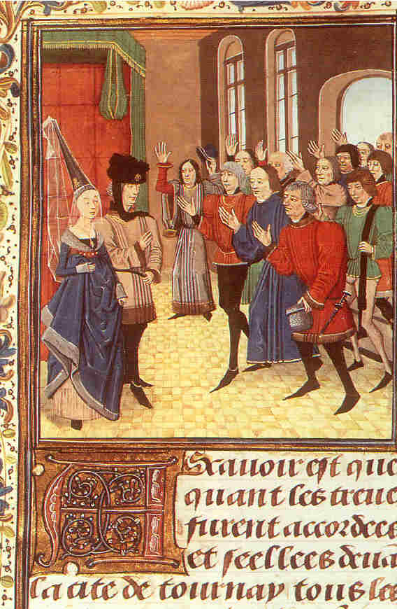
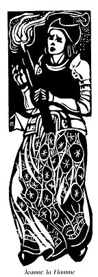

Janedig Flamm
Ton
|
I
1. - Petra a ya gant ar menez? Ur rumm meot du, gredan, eo; 2. - Ur rumm meot du n'ed-eo ket; Soudarded ne lavaran ket, 3. Soudarded a Vro-C'hall o tont Da lakaad seziz war 'n Henbont.- II 4. Pa oa an Dukez war vale, Ar c'hleier e ker a vralle, 5. Pa oa war he falafrez gwenn Ganti he mab war he barlenn. 6. Pa oa an Dukez o vale Re an Henbont oll a youe: 7. - Doue sikour ar mab hag ar vamm Ha ro d'ar C'hallaoued estlamm! - 8. Pa oa ar bale echuet, Ar re Bro C'hall a oa klevet: 9. - Paket vo bremañ en o c'hev An heizez hag he c'havrig bev! 10. Chadennoù aour zo evito D'ho stagañ 'n eil deuz egile! - 11. Janedig Flamm a responte Demeuz beg an tour all neuze: 12. - N'eo ket an heizez ' vo paket. Ar c'hozh bleiz (*) ne lavaran ket. 13. Ma eñ-deus henoz anoued, E doull dezañ a vo tommet. - 14. N'oa ket peurlavaret he ger, Pa oa deut d'an traoñ hag hi têr. 15 Hag ur c'horfenn-houarn a wiskas, Hag un tok houarn du a lakaas; 16 Ur c'hleze dir lemm a dapas Ha tri c'hant den a zibabas, 17. Hag ur skod-tan ruz en he dorn A eas mez ar ger dre ur c'horn. III 18. Re Bro-C'hall laouen a gane Ouz an daol azezet neuze; 19. Gwasket en o zinelloù kloz, Re Bro-Chall a gane en noz, |
  (*) bleiz = Charlez Bleiz 
|
20. 'Vel ma glevet pell ac'hano
Eur vouez espar o tiskanañ: 21. " Meur a hini a c'hoarz fenoz A ouelo kent ha benn warc'hoazh. 22. " Meur a hini ' zebr bara gwenn, A zebro douar du ha yén. 23. " Meur a hini a skuilh gwin ruz, A skuilho bremaig gwad druz. 24. " Meur a hini a rei ludu A c'hoari 'vad e zen diouzhtu." 25. Meur a hini ' stoue e dal War vordig an daol, mezo-dall, 26 Ha pa oa losket ur glemmvan: - An tan! Paotred, an tan! an tan! 27. An tan! an tan! tec'hom, paotred! Janedig-Flamm deus eñ lakaet! - 28. Janedig-Flamm zo an terrañ A zo en douar a gredan. 29. Lakaet he-doa Janedig-Flamm An tan e pevar korn ar c'hamp; 30. Ken a oa ar flammoù gwentet Hag an noz du sklerijennet; 31. Koulz hag an dinelloù devet, Koulz hag ar C'hallaoued rostet, 32. Ha tri mil anezo luduet, Ha nemed kant ne oa chomet. IV 33. Ha Janedig-Flamm a c'hoarze ' Toull he fenestr, ar mintin-se; 34. War ar mez pe defa sellet O welled ar c'hamp distrujet, 35. Ha moged euz an dinelloù Luduet oll e bernigoù. 36. Ha Janedig-Flamm c'hoarze: - Pebez maradeg, va Doue! 37. Va Doue! pebez maradeg! Evid ur greun ni hor-bo deg! 38. Gwir a lare amzer gwechall: " N'eus netra koulz hag eskern Gall, 39. Koulz hag eskern Gall bruzhunet, Da lakaad da zevel an éd!" |